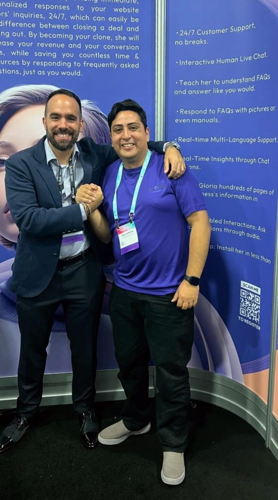

Gloria AI — Asistente de IA para Calificación de Leads
Abril 2023 – Julio 2024 | Miami, EE. UU.
Como Product Owner llevé a Gloria AI desde su concepción hasta su lanzamiento. Gestioné un backlog de 900+ historias de usuario, definí la visión del producto junto al CEO y lideré un equipo multicultural de desarrolladores y diseñadores. Presenté la plataforma en eMerge Americas 2024.
- 📈 Aumentamos la base de usuarios a más de 1.000 registrados en 2 meses.
- ⏱️ Resolvimos el 90 % de tickets de soporte en menos de 2 horas.
- 🤖 Automatización de respuestas de soporte, reduciendo tiempos de atención en 60%.
- 🛠️ Diseño y publicación de plugin en el repositorio oficial de WordPress.
